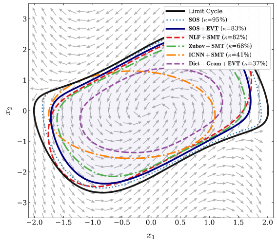

Sample
Run independent PSGLD chains initialized across the boundary manifold to explore high values of Ẋ.
Certifying the Region of Attraction (ROA) for high-dimensional nonlinear dynamical systems remains a severe computational bottleneck. Traditional deterministic verification methods provide hard guarantees but suffer from the curse of dimensionality, typically failing to scale beyond 20 dimensions.
We propose SCORE, a statistical certification framework that shifts from deterministic guarantees to bounding the worst-case safety violation with high statistical confidence. By integrating Projected Stochastic Gradient Langevin Dynamics (PSGLD) with Extreme Value Theory (EVT), SCORE frames ROA certification as a constrained extreme-value estimation problem.
Under stationary sampling and a regular local-geometry condition around the global maximum, the Lyapunov derivative belongs to the Weibull maximum domain of attraction. Experiments achieve certification tightness competitive with exact Sum of Squares programming in 2D and scale to a dense, unstructured 500-dimensional ODE at a nominal confidence level of 99.99%.
For a continuous-time system $\dot{x}=f(x)$ with Lyapunov candidate $V(x)$, the sublevel set $\Omega_\rho = \{x \mid V(x) \leq \rho\}$ is a forward-invariant subset of the ROA when $\dot V(x)<0$ throughout the set, except at the origin.
Because $V$ is continuous, it is sufficient to evaluate the largest Lyapunov derivative on the boundary manifold $\mathcal{M}=\{x \mid V(x)=\rho\}$:
Finding this global maximum is highly non-convex. Grid methods face the curse of dimensionality, SMT is inherently difficult for dense nonlinear constraints, and SOS programs undergo combinatorial matrix growth. SCORE instead treats the worst-case violation as a rare-event estimation problem.
Four steps turn stochastic exploration on the ROA boundary into a conditional statistical certificate.
Run independent PSGLD chains initialized across the boundary manifold to explore high values of Ẋ.
Partition the terminal samples into blocks and retain the maximum from each block.
Fit a Weibull-class generalized extreme value distribution and check goodness of fit.
Bootstrap the finite endpoint; a negative upper confidence bound yields the certificate.
Under stationary sampling and regular local geometry near a nondegenerate maximum, the optimality gap behaves locally like a scaled chi-squared variable.
This decay toward a finite right endpoint places the upper tail in the Weibull maximum domain of attraction.
Scope: SCORE provides a conditional statistical certificate, not an unconditional deterministic proof.
SCORE is evaluated for both low-dimensional tightness and high-dimensional scalability.

Exact SOS certifies 95% of the true ROA. Applying EVT to the SOS-synthesized candidate reaches 83% at 99% confidence, demonstrating that the statistical certification engine closely approximates deterministic verification. SCORE with the simpler Dict-Gram candidate certifies 37%, isolating the remaining conservatism to candidate synthesis.
Maximum certified state dimension within a 10-minute timeout.
| Certification pipeline | Maximum dimension |
|---|---|
| Zubov (PINN) + SMT | 2 |
| ICNN + SMT | 2 |
| NLF + SMT | 10 |
| Classical SOS | 20 |
| Dict-Gram + EVT (SCORE) | 500 |
On a dense, unstructured dissipative ODE, SCORE reaches 500 dimensions at a nominal confidence level of 99.99%. The method relies on local gradient evaluations rather than global algebraic or logical constraint resolution, avoiding the combinatorial bottlenecks that restrict the deterministic baselines.
SCORE makes high-dimensional ROA certification computationally practical by estimating a statistically defensible upper bound on the worst Lyapunov-derivative violation. It complements (not replaces) deterministic verification when exact global proofs are computationally out of reach.
This work was supported by the U.S. Department of Energy, Office of Science, Advanced Scientific Computing Research program under the MOLUcQ project (No. 81739).
Follow the notebooks in order for the complete workflow, or run any one on its own. Each tutorial starts from a fixed seed.
Open each notebook with the links below and work through tutorials 01–03 in order. Basic Python, derivatives, matrices, and the idea of an ODE are sufficient prerequisites.
Visualize reverse-time Van der Pol dynamics, derive a local quadratic candidate, compare automatic and finite-difference derivatives, and inspect trajectories.
Open in ColabReuse the EVT feature map, learn a positive Gram matrix, compare held-out diagnostics, and visualize candidate sublevels. The default run uses 300 CPU training steps.
Open in ColabAssess a fresh candidate or load notebook 02’s checkpoint, sample a shell, search for violations, fit block maxima, and inspect bootstrap endpoint sensitivity.
Open in Colab@article{zanotta2026score,
title = {SCORE: Statistical Certification of Regions of Attraction via Extreme Value Theory},
author = {Zanotta, Pietro and Stinis, Panos and Drgo\v{n}a, J\'{a}n},
journal = {arXiv preprint arXiv:2603.29658},
year = {2026}
}